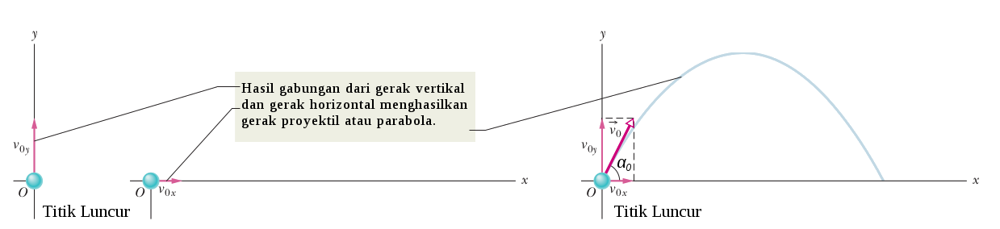

pada gerak parabola kecepatan awal terdiri dari kecepatan awal pada arah vertikal (sumbu Y) dan arah horizontal (sumbu X). Benda membentuk sudut sebesar α dapat digambarkan menggunakan grafik sebagai berikut:
Gerak parabola merupakan perpaduan gerak lurus beraturan (GLB) pada arah horizontal atau sumbu X dan gerak lurus berubah beraturan (GLBB) pada arah vertikal atau sumbu Y.
Kecepatan awal pada sumbu X berlaku
\[
v_x=v_{0x}=v_0 cos \alpha t
\]
Kecepatan awal pada sumbu Y berlaku v0y = v0 sin α
Resultan Kecepatan awal berlaku v0=
√ v0x2 + v0y2